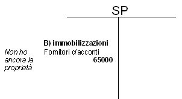
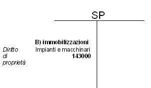
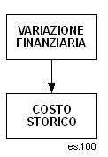
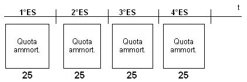

Torna alla pagina di Economia ed Organizzazione Aziendale
:: Economia ed Organizzazione Aziendale ::
Lezione 05/05/2008
Il CE deve essere in forma scalare ed i primi due campi(contrassegnati da lettere maiuscole)sono:
A) VALORE DELLA PRODUZIONE
B) COSTI DELLA PRODUZIONE
Sono elementi del patrimonio(cap. di funzionamento).
Sono beni ad utilità ripetuta.
Possono essere: Immateriali(costi di impianto ed ampliamento; spese per ricerca e sviluppo e spese di pubblicità; diritti per brevetti; avviamento), Materiali, Finanziarie.
Titolare diritti di proprietà:
- apporti di conferimento
- acquisti da terzi
- costruzioni in economia
Titolare diritto di godimento:
- locazioni finanziarie(leasing)
- locazioni
Nota:
libro dei beni ammortizzabili:
al termine di ogni esercizio:
nelle società di capitali(SPA e SRL):
- il tribunale nomina un esperto
- relazione giurata redatta dall'esperto; contiene il valore da iscrivere nello SP
- rischio: annacquamento del capitale
- Il valore da inserire come COSTO STORICO dello SP:
costo di acquisto + costo accessori(trasporto, installazione, collaudo) + oneri finanziari
- Valore di recupero
- Acconti a Fornitori, si riferisce all'acquisto da terzi, che può essere pagato subito oppure tramite acconti a fornitori.
Il 30/09 la Rossi SPA in fase di espansione commissiona a un fornitore un nuovo impianto per il costo di 135000. L'impianto viene consegnato 6 mesi dopo(30 Marzo).
Il contratto prevede:
- versamento acconto pari a 1/3 del costo, alla stipula
- versamento di un 2° acconto di 20000 a 3 mesi dalla stipula
- pagamento a saldo della consegna
L'impianto viene consegnato il 30 Marzo. Il costo complessivo ammonta a 142000. Si paga in contanti per il collaudo, si riceve una fattura di 1000.
RICHIESTA:
Presentare l'SP dei due anni
SOLUZIONE:
1°anno
Acconti:
1° 135000 * 1/3 = 45000
2° 20000
TOT acconti= 65000

2°anno
Costo Storico = 142000(Costo di Acquisto) + 1000(collaudo) = 143000

Il debito che si contrae al momento dell'acquisto dell'immobilizzazione ed il pagamento successivo al fornitore, misurano il costo(costo pluriennale) + debiti per servizi accessori.
Poiché il bene si utilizza per più esercizi il costo storico(pluriennale) si suddivide su più anni, es. consecutivi.
IPOTESI:
- acquisto del bene primi giorni di gennaio ES1
- ripartizione del costo in 4 esercizi consecutivi
- quote di ammortamento costante


VALORE DI RECUPERO: negoziato con un 3° soggetto al termine del 4° esercizio.
VALORE CONTABILE: K - fondo ammortamento, quindi cambia al passare degli esercizi.